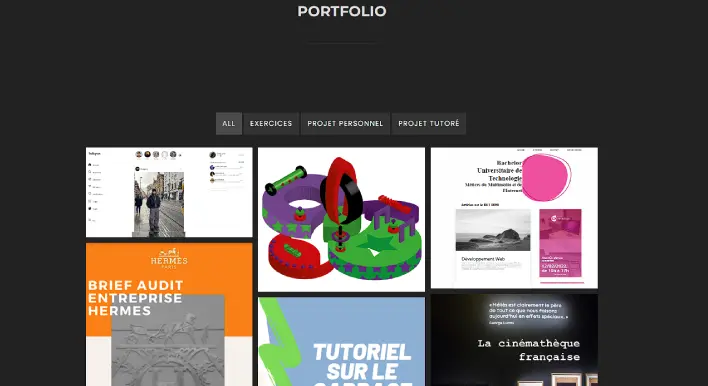

Portfolio Wordpress
Pour ce projet universitaire je devais réaliser un site Portfolio en
prenant en main pour la première fois le CMS (Content Management System)
WordPress et les hébergeurs de sites, en l'occurrence l’hébergeur Alwaysdata.
J’ai tout d’abord fait une maquette Figma pour avoir une idée de vers où j'allais aller avec ce portfolio
puis en fonction du template choisis j’ai avisé.
Puis réalisé un google docs pour expliquer qui j’étais pour ensuite le mettre sur le site.
Puis j’ai fait toutes les pages nécessaires afin d’avoir un bon portfolio c’est-à-dire, une page projets, CV et une page contact.
Pour ce portfolio j’ai utilisé principalement les extensions: Elementor, Portfolio for Elementor; Contact Form 7 et Yoast SEO. J’ai aussi réalisé le SEO de mon site. La réalisation de ce site web m’a permis de prendre en main les hébergeurs mais aussi de savoir comment on mettait en place un site web et bien évidemment de savoir utiliser un CMS.